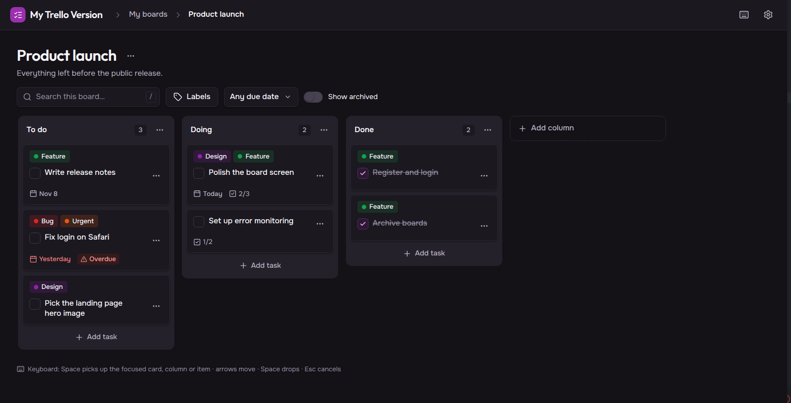

My Trello Version
Quadro estilo Trello que projetei e entreguei de ponta a ponta, com contrato de API compartilhado, testes em 3 níveis e CI. Cada Pull Request está aberto no GitHub, para você conferir.
Objetivo
Não achei um app de tarefas simples, gratuito e customizável. Quis construir o meu e mostrar como uso o Spec-Driven Development.
Um app completo com práticas de produção: API modular, erros padronizados, logs estruturados e tudo em Docker.
Um jeito disciplinado de construir software com IA: eu especifico e decido a arquitetura, a IA executa, eu reviso cada Pull Request.
Processo
Cada feature segue o mesmo ciclo: spec, design, tarefas, teste vermelho, código e PR. Uma tarefa por branch, commits pequenos.
- 01Speco que construir
- 02Designcomo construir
- 03Tarefasuma por branch
- 04Teste vermelhoantes do código
- 05Códigocommits pequenos
- 06PRrevisão humana
Evidências

Escopo: a versão web está completa. O app mobile está fora do escopo por ora.
Leia o código e o histórico
Cada Pull Request está no repositório.